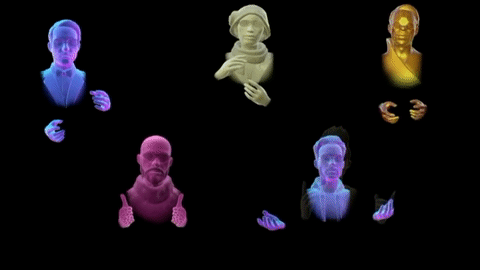

Oculus Touch
Trent Myers
February 13, 2018
## Overview
* Hand presence technology for use with Oculus Rift.
* Launched on December 6, 2016 for $199 with sensor.
* On July 14, 2017 Oculus began to include Touch with the $400 Rift bundle.
* Ment to directly compete with VIVE Controller.
## How does it work?
The Touch Controllers are fitted with a series infrared LEDs. IR cameras are used to capture these LEDs and determine the position of the controllers.

## Gestures
Thanks to the buttons on the Touch Controllers being capacitive advanced gesture controll is possible.

Enhanced communication

## Uses
Thanks to the prevalence of the Oculus Rift Platform and powerful Oculus OVRInput API, Touch brings meaningful interaction to a huge number of applications including:
* NVIDIA HOLODECK
* Engage Education Platform
* Soundstage VR
* Calcflow
* Applications made with A-frame
## Weaknesses
* Requires 3 cameras for 360 tracking
* Bottom three fingers move together
* Still too expensive to be completely mainstream
Sickness/Nausea
I have been using the Oculus Touch Controllers for about 6 months and they have not added any discomfort to my VR expierence.
Rating: 0/10
## Similar Devices
* HTC VIVE Controllers
* PSVR Move Controllers
* Windows Mixed Reality Controllers
## References
* https://www.oculus.com/blog/oculus-touch-launches-today/
* https://www.vrfocus.com/2015/06/palmer-luckey-explains-oculus-rifts-constellation-tracking-and-fabric/
* https://developer.oculus.com/documentation/unity/latest/concepts/unity-ovrinput/